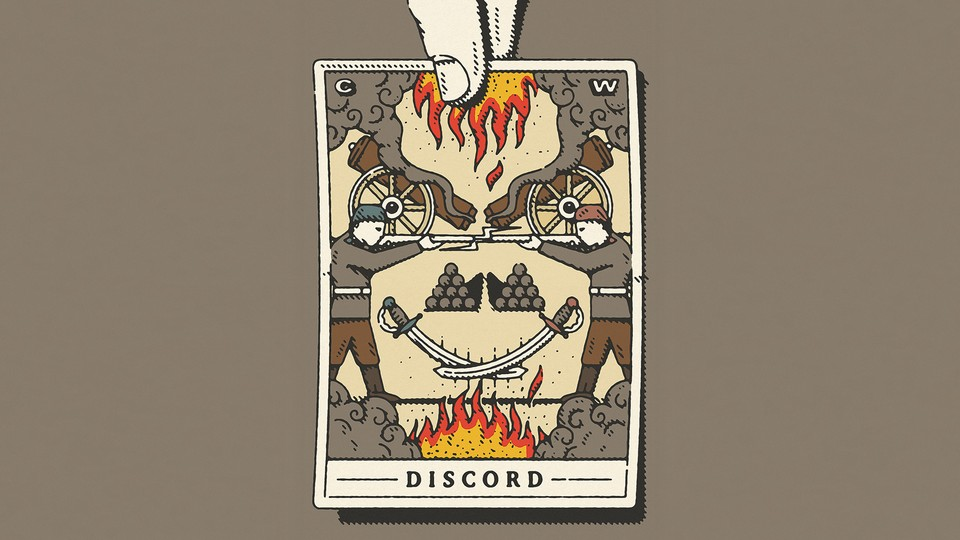

| 上一项 | 文章 | 章节 | 下一项 |
Beware Prophecies of Civil War
The idea that such a catastrophe is unavoidable in America is inflammatory and corrosive.
by Fintan O’Toole

In January 1972, when I was a 13-year-old boy in Dublin, my father came home from work and told us to prepare for civil war. He was not a bloodthirsty zealot, nor was he given to hysterical outbursts. He was calm and rueful, but also grimly certain: Civil war was coming to Ireland, whether we wanted it or not. He and my brother, who was 16, and I, when I got older, would all be up in Northern Ireland with guns, fighting for the Catholics against the Protestants.
What made him so sure of our fate was that the British army’s parachute regiment had opened fire on the streets of Derry, after an illegal but essentially peaceful civil-rights march. Troops killed 13 unarmed people, mortally wounded another, and shot more than a dozen others. Intercommunal violence had been gradually escalating, but this seemed to be a tipping point. There were just two sides now, and we all would have to pick one. It was them or us.
The conditions for civil war did indeed seem to exist at that moment. Northern Irish society had become viciously polarized between one tribe that felt itself to have suffered oppression and another one fearful that the loss of its power and privilege would lead to annihilation by its ancient enemies. Both sides had long-established traditions of paramilitary violence. The state—in this case both the local Protestant-dominated administration in Belfast and the British government in London—was not only unable to stop the meltdown into anarchy; it was, as the massacre in Derry proved, joining in.
Yet my father’s fears were not fulfilled. There was a horrible, 30-year conflict that brought death to thousands and varying degrees of misery to millions. There was terrible cruelty and abysmal atrocity. There were decades of despair in which it seemed impossible that a polity that had imploded could ever be rebuilt. But the conflict never did rise to the level of civil war.
However, the belief that there was going to be a civil war in Ireland made everything worse. Once that idea takes hold, it has a force of its own. The demagogues warn that the other side is mobilizing. They are coming for us. Not only do we have to defend ourselves, but we have to deny them the advantage of making the first move. The logic of the preemptive strike sets in: Do it to them before they do it to you. The other side, of course, is thinking the same thing. That year, 1972, was one of the most murderous in Northern Ireland precisely because this doomsday mentality was shared by ordinary, rational people like my father. Premonitions of civil war served not as portents to be heeded, but as a warrant for carnage.
Could the same thing happen in the United States? Much of American culture is already primed for the final battle. There is a very deep strain of apocalyptic fantasy in fundamentalist Christianity. Armageddon may be horrible, but it is not to be feared, because it will be the harbinger of eternal bliss for the elect and eternal damnation for their foes. On what used to be referred to as the far right, but perhaps should now simply be called the armed wing of the Republican Party, the imminence of civil war is a given.
Indeed, the conflict can be imagined not as America’s future, but as its present. In an interview with The Atlantic published in November 2020, two months before the invasion of the U.S. Capitol on January 6, the founder of the Oath Keepers, Stewart Rhodes, declared: “Let’s not fuck around.” He added, “We’ve descended into civil war.” The following month, the FBI, warning of possible attacks on state capitols, said that members of the so-called boogaloo movement “believe an impending insurgency against the government is forthcoming and some believe they should accelerate the timeline with armed, antigovernment actions leading to a civil war.”
Premonitions of civil war in Ireland served not as portents to be heeded, but as a warrant for carnage.
After January 6, mainstream Republicans picked up the theme. Much of the American right is spoiling for a fight, in the most literal sense. Which is one good reason to be very cautious about echoing, as the Canadian journalist and novelist Stephen Marche does in The Next Civil War: Dispatches From the American Future, the claim that America “is already in a state of civil strife, on the threshold of civil war.” These prophecies have a way of being self-fulfilling.
Admittedly, if there were to be another American civil war, and if future historians were to look back on its origins, they would find them quite easily in recent events. It is news to no one that the United States is deeply polarized, that its divisions are not just political but social and cultural, that even its response to a global pandemic became a tribal combat zone, that its system of federal governance gives a minority the power to frustrate and repress the majority, that much of its media discourse is toxic, that one half of a two-party system has entered a postdemocratic phase, and that, uniquely among developed states, it tolerates the existence of several hundred private armies equipped with battle-grade weaponry.
It is also true that the American system of government is extraordinarily difficult to change by peaceful means. Most successful democracies have mechanisms that allow them to respond to new conditions and challenges by amending their constitutions and reforming their institutions. But the U.S. Constitution has inertia built into it. What realistic prospect is there of changing the composition of the Senate, even as it becomes more and more unrepresentative of the population? It is not hard to imagine those future historians defining American democracy as a political life form that could not adapt to its environment and therefore did not survive.
It is one thing, however, to acknowledge the real possibility that the U.S. could break apart and could do so violently. It is quite another to frame that possibility as an inevitability. The descent into civil war is always hellish. America has still not recovered from the fratricidal slaughter of the 1860s. Even so, the American Civil War was relatively contained compared with what happened to Russia after the Bolshevik Revolution, to Bosnia after the breakup of Yugoslavia, or to Congo from 1998 to 2003. The idea that such a catastrophe is imminent and unavoidable must be handled with extreme care. It is both flammable and corrosive.
Marche clearly does not intend to be either of these things, and in speculating about various possible catalysts for chaos in the U.S., he writes more in sorrow than in anger, more as a lament than a provocation. Marche’s thought experiment begins, however, with two conceptual problems that he never manages to resolve.
The first of these difficulties is that, as the German poet and essayist Hans Magnus Enzensberger put it in his 1994 book Civil Wars, “there is no useful Theory of Civil War.” It isn’t a staple in military school—Carl von Clausewitz’s bible, On War, has nothing to say about it. There are plenty of descriptions of this or that episode of internal conflict. Thucydides gave us the first one, History of the Peloponnesian War, 2,500 years ago. But as Enzensberger writes, “It’s not just that the mad reality eludes formal legal definition. Even the strategies of the military high commands fail in the face of the new world order which trades under the name of civil war. The unprecedented comes into sudden and explosive contact with the atavistic.”
This mad reality is impossible to map onto a country as vast, diverse, and demographically fluid as the United States already is, still less onto how it might be at some unspecified time in the future. Marche has a broad notion that his putative civil war will take the form of one or more armed insurrections against the federal government, which will be put down with extreme violence by the official military. This repression will in turn fuel a cycle of insurgency and counterinsurgency. Under the strain, the U.S. will fracture into several independent nations. All of this is quite imaginable as far as it goes. But such a scenario does not actually go very far in defining this sort of turmoil as a civil war. Indeed, Marche himself envisages that, while “one way or another, the United States is coming to an end,” this dissolution could in theory be a “civilized separation.”
But this possibility does not sit well with the doomsaying that is his book’s primary purpose. Nor is it internally coherent. Marche seems to think that a secession by Texas might be consensual because Texas is a “single-party state.” This would be news to the 46.5 percent of its voters who supported Joe Biden in the 2020 election. How would they feel about losing their American citizenship and being told that they now owe their allegiance to the Republic of Texas? If we really do want to imagine a future of violent conflict, would it not be just as much within seceding states as among supposedly discrete geographic and ideological blocs?
The secession of California as well as Texas is just one of five “dispatches” that Marche writes from his imagined future. He begins with an eminently plausible and well-told tale of a local sheriff who takes a stand against the government’s closure for repair of a bridge used by most of his constituents. The right-wing media make him a hero figure, and he exploits the publicity brilliantly. The bridge becomes a magnet for militias, white supremacists, and anti-government cultists. The standoff is brought to an end by a military assault, resulting in mass casualties and creating, on the right, both a casus belli and martyrs for the cause. Marche’s other dispatches describe the assassination of a U.S. president by a radicalized young loner; a combination of environmental disasters, with drought causing food shortages and a massive hurricane destroying much of New York; and the outbreak of insurrectionary violence and the equally violent responses to it.
All of these scenarios are well researched and eloquently presented. But how they relate to one another, or whether the conflicts they involve can really be regarded as a civil war, is never clear. Civil wars need mass participation, and how that could be mobilized across a subcontinent is not at all obvious. Marche seems to endorse the claim of the military historian Peter Mansoor that the pandemonium “would very much be a free-for-all, neighbor on neighbor, based on beliefs and skin colors and religion.” His scenarios, either separately or cumulatively, do not show how or why the U.S. arrives at this Hobbesian state.
Marche’s other conceptual problem is that, in order to dramatize all of this as a sudden and terrible collapse, he creates a ridiculously high baseline of American democratic normalcy. “A decade ago,” he writes, “American stability and global supremacy were a given … The United States was synonymous with the glory of democracy.” In this steady state, “a president was once the unquestioned representative of the American people’s will.” The U.S. Congress was “the greatest deliberative body in the world.”
These claims are risible. After the lies that underpinned the invasion of Iraq and the abject failures of Congress to impose any real accountability for the conduct of the War on Terror, the beacon of American democracy was pretty dim. Has the sacred legitimacy of any U.S. president been unquestioned, ever? Did we imagine the visceral hatred of Bill Clinton among Republicans or Donald Trump’s insistence that Barack Obama was not even a proper American, let alone the embodiment of the people’s will?
This failure of historical perspective means that Marche can ignore the evidence that political violence, much of it driven by racism, is not a new threat. Even if we leave aside the actual Civil War, it has long been endemic in the U.S. Were the wars of extermination against American Indians not civil wars too? What about the brutal obliteration of the Black community in Greenwood, in Tulsa, Oklahoma, in 1921—should that not be seen as an episode in a long, undeclared war on Black Americans by white supremacists? The devastating riots in cities across America that followed the assassination of Martin Luther King Jr. in 1968, and in Los Angeles after the beating of Rodney King in 1992, sure looked like the kind of intercommunal violence that Marche conjures as a specter from the future. Arguably, the real problem for the U.S. is not that it can be torn apart by political violence, but that it has learned to live with it.
This is happening again—even the attempted coup of January 6 is already, for much of the political culture, normalized. Marche is so intent on the coming catastrophe that he seems unable to focus on what is in front of his nose. He writes, for example, that the assault on the Capitol cannot be regarded as an insurrection, because “the rioters were only loosely organized and possessed little political support and no military support.” The third of these claims is broadly true (though military veterans featured heavily among the attackers). The first is at best dubious. The second is bizarre: The attack was incited by the man who was still the sitting president of the United States and had, both at the time and subsequently, widespread support within the Republican Party.
In this context, feverish talk of civil war has the paradoxical effect of making the current reality seem, by way of contrast, not so bad. The comforting fiction that the U.S. used to be a glorious and settled democracy prevents any reckoning with the fact that its current crisis is not a terrible departure from the past but rather a product of the unresolved contradictions of its history. The dark fantasy of Armageddon distracts from the more prosaic and obvious necessity to uphold the law and establish political and legal accountability for those who encourage others to defy it. Scary stories about the future are redundant when the task of dealing with the present is so urgent.
This article appears in the January/February 2022 print edition with the headline “Dangerous Prophecies.” When you buy a book using a link on this page, we receive a commission. Thank you for supporting The Atlantic.
This article was downloaded by calibre from https://www.theatlantic.com/magazine/archive/2022/01/america-civil-war-prophecies/620850/
| 上一项 | 文章 | 章节 | 下一项 |